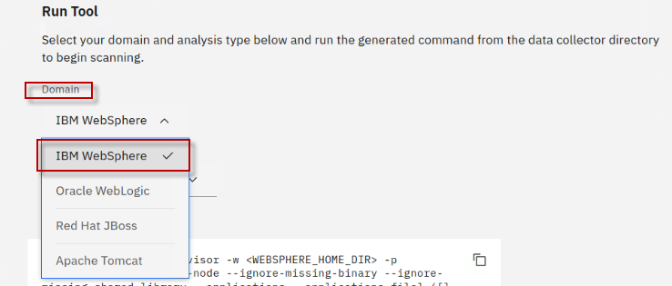
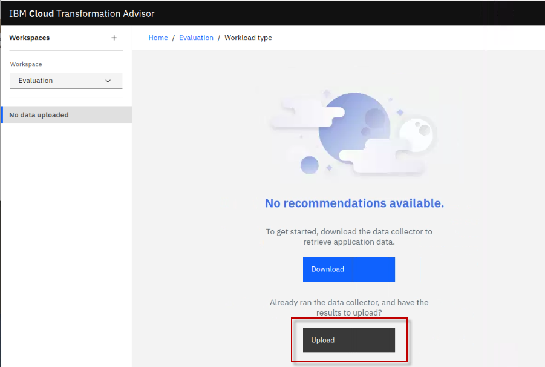
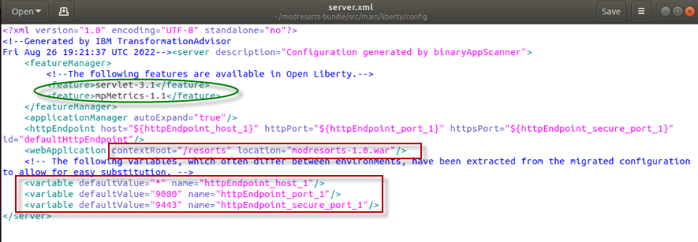
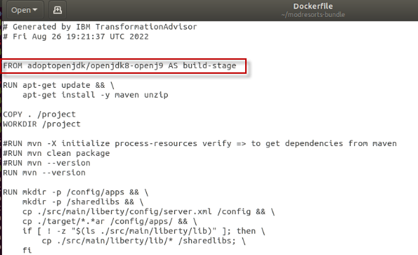
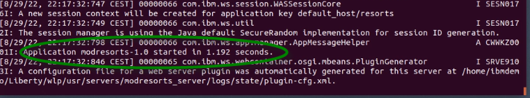

Explore IBM Transformation Advisor data collection, app assessments, and deployment accelerators
Hands-on scenario using TA’s WebSphere Data collector, Java application assessment, and deployment accelerators for modernization to Liberty and containers
Explore IBM Transformation Advisor
This lab provides fundamental hands-on experience of the evaluation process of WebSphere application for their modernization journey to Liberty and container-based clouds. It shows the value of using Transformation Advisor (TA) to evaluate on-premises Java applications and identify a migration candidate for moving to the cloud.
You will also learn how to use the deployment accelerators that TA generates to help deploy and run Java applications on Liberty and in containers.
Upon completion of this lab, you will have gained experience using TA to quickly analyze on-premises Java applications without accessing their source code, estimate the effort in moving to container-based clouds, and using TA’s deployment accelerators to accelerate your application modernization journey to Liberty and containers.
IBM Cloud Transformation Advisor (Transformation Advisor) is an application modernization tool that is entitled through IBM WebSphere Hybrid Edition. Transformation Advisor helps you quickly evaluate on-premises Java EE applications for deployment to the cloud. The Transformation Advisor tool provides the following value:
-
identify the Java EE programming models in the app.
-
determine the complexity of apps by listing a high-level inventory of the content and structure of each app.
-
highlight Java EE programming model and WebSphere API differences between the WebSphere profile types
-
identify Java EE specification implementation differences that might affect the app
-
generate accelerators for deploying the application to Liberty and containers in a target environment.
Additionally, the tool provides a recommendation for the right-fit IBM WebSphere Application Server edition and offers advice, best practices, and potential solutions to assess the ease of moving apps to Liberty or newer versions of WebSphere traditional. It accelerates application migrating to cloud process, minimize errors and risks and reduce time to market.
1. Introduction
As shown in the image below, your company has several web applications deployed to WebSphere Application Server (WAS) environment.

Your company wants to move these applications to the modern WebSphere Liberty server on a container-based cloud. However, you are not sure how much effort the migration process might take.
You decide to use the IBM Transformation Advisor to do a quick evaluation of these applications without their source code to identify a good candidate application to move to Liberty and container-based cloud.
After determining a candidate application for modernization to WebSphere Liberty, you use the accelerators generated by TA to deploy and run the application to WebSphere Liberty on your local developer machine and in containers to validate the solution.
2. Objective
The objectives of this lab are to:
-
Learn how to collect Java application and configuration data using the Transformation Advisor Data Collector tool.
-
Learn how to use the Transformation Advisor to evaluate the effort involved to modernize to Liberty and container-based clouds and identify good application candidates for modernization.
-
Learn how to use the accelerators generated by Transformation Advisor to deploy a candidate application to WebSphere Liberty and containers.
3. Prerequisites
The following prerequisites must be completed prior to beginning this lab:
-
Familiarity with basic Linux commands
-
Have internet access
-
Have a SkyTap lab environment ready
4. The lab environment
One Linux VM is included in the environment and has been provided for this lab.

-
The Workstation-Liberty-TA-M2m VM will be referred as the “workstation” VM throughout the lab.
-
The login credentials for the workstation VM are:
-
User ID: ibmdemo
-
Password: passw0rd
-
-
Transformation Advisor (TA) has already been installed on the Workstation VM. TA local runs in Docker containers.
-
Get started using Transformation Adviser for yourself: http://ibm.biz/cloudta
5. Lab Tasks
In this lab, you will use the Transformation Advisor to identify a good candidate application for moving to WebSphere Liberty and containers.
To identify which Java EE programming models are on the server, you would typically run the Transformation Advisor Data Collector tool against a WebSphere server or cell.
For this lab, you will simulate the process of running the data collector which generates a “data collection” which is a zip file containing the inventory of the application, structure of each application, the WebSphere server configuration required for the application, and various analysis reports.
For this lab environment, the data collection zip archive file has already been generated. You will import that zip file into the Transformation Advisor UI for application analysis.
Using Transformation Advisor, you will gain insights into potential migration issues that may need to be remediated if you move the application to Liberty and containers. Reviewing the analysis reports, you will determine the complexity of the development effort required and select a candidate application to migrate to Liberty in a container-based cloud.
Here are the activities involved in this process:
-
Simulate running the Transformation Advisor Data Collector tool against the WebSphere Application Server to get application data
-
Upload the data collection zip archive file that was generated by the data collector, into Transformation Advisor UI for analysis.
-
Review the analysis and reports that Transformation Advisor generates to identify the right candidate application for a rapid and cost-effective migration to Liberty and container-based cloud.
6. Execute Lab Tasks
6.1 Log in to the workstation VM and Get Started
-
If the VM is not already started, start it by clicking the play button for the whole group.

-
After the VMs are started, click the Workstation VM icon to access it.
-
If you see a screen displaying only “ibmdemo”. Click on the screen to get to the password prompt to login.

-
Login with ibmdemo ID.
-
Click on the ibmdemo icon on the screen.
-
When prompted for the password for ibmdemo, enter "password" as the password:

-
-
Resize the Skytap environment window for a larger viewing area while doing the lab. From the Skytap menu bar, click on the "Fit to Size" icon. This will enlarge the viewing area to fit the size of your browser window.

6.2 The WebSphere applications to be assessed
The illustration below shows the WebSphere applications that are deployed to the WebSphere Application Server (WAS) environment. We already ran the Transformation Advisor Data Collection tool against the WebSphere server and provided the resulting data collection zip archive file on the Workstation VM to be used in the lab.
You will simulate the data collection process. However, not actually run the data collector since this lab environment does not have access to the WebSphere environment.
As illustrated below, Transformation Advisor will collect the application data for the following five applications. During the analysis of these applications, you will gain important insights regarding these applications, their JEE technologies used, relative complexity of each application, and detailed analysis of the overall effort and complexity of moving each application to Liberty and container-based cloud environments.
In the Enterprise Applications list above, you can see the applications that deployed to the WebSphere Application Server environment. Next, you use Transformation Advisor to analyze these applications to identify a good candidate to be moved to Liberty.
6.3 Launch Transformation Advisor (local)
The Transformation Advisor can evaluate any Java based applications. In this lab, you are going to use it to evaluate whether the on-premises WebSphere application, Mod Resorts, is suitable to move to Liberty and what the effort might be to get it there.
The Transformation Advisor is installed locally on the Workstation VM. Launch the Transformation Advisor tool using the steps below.
-
From Workstation VM Desktop Tool Bar, click the Terminal icon to open a Terminal window.

-
Clone the GitHub repo that includes artifacts required for this lab
cd /home/ibmdemo git clone https://github.com/IBMTechSales/student-tech-academy-platform.gitOnce completed, the local lab artifacts repo is cloned at /home/ibmdemo/student-tech-academy-platform directory on the Workstation desktop.
-
Launch the Transformation Advisor with commands:
cd /home/ibmdemo/TA_LOCAL/transformationAdvisor/transformation-advisor-local-3.2.1 ./launchTransformationAdvisor.shWait for Transformation Advisor to initialize and display the action menu list.
-
Type 5 and press Enter to start the Transformation Advisor.

-
The Transformation Advisor application is started, right-click the application URL link and select Open Link to launch it in a web browser window
This Transformation Advisor Home page is displayed in the Web Browser.

In the next section, you will use the Transformation Advisor UI to download the data collector utility for the environment that the WebSphere Application Server would be running, such as Windows or Linux.
6.4 Download Transformation Advisor Data Collector utility
Now the Transformation Advisor is running, you will download its Data Collector utility that would run on a WebSphere Application Server.
To evaluate on-premises Java applications, you need to run Transformation Advisor Data Collector utility against the Application server environment. It will extract application information from the environment. The utility can be downloaded from the Transformation Advisor UI.
-
From the Transformation Advisor Home page, create a new workspace
a. Click the Create New button
b. Enter the workspace name as Evaluation, then click the Create button


A workspace is a designated area that will house the migration recommendations provided by Transformation Advisor from your application server environment. You can name and organize these however you want, whether it’s by business application, location, or teams Once the Workspace is created, you will have options to either download the Data Collector utility or upload existing data file.

In this lab, we are going to perform the following steps:
-
Download the Data Collector utility for the Linux environment
-
Simulate running the data collector
-
Upload an existing data collection zip file into Transformation Advisor for analysis
-
Use the accelerators generated by Transformation Advisor to deploy the Mod Resorts application to Liberty, and to containers.
-
-
Click the Download button to download the data collector for Linux

-
In the Download page, you can download data collector utility based on your source operating system for your WebSphere environment. It also shows how to use the command line utility to collect application and configuration data from WebSphere, WebLogic, and Tomcat servers.
a. Since the lab VM is a Linux OS, click Download Linux to get the utility.

b. In the Chrome browser window, when the download is complete, you will see the file shown in the bottom banner of the browser window.

The zipped Data Collector utility file will be saved in /home/ibmdemo/Downloads directory of the Workstation VM.
Continue to the next section of the lab to simulate running the data collector utility.
6.5 Simulate running the Transformation Advisor Data Collector utility
After downloading the zipped Data Collector utility, it needs to be unpacked and run against a WebSphere Application server (WAS) to collect all the data of deployed applications and their configuration from the WAS server.
Now, let’s simulate the steps to run the data collector.
-
Go back to the terminal window and navigate the /home/ibmdemo/Downloads directory and view its contents with commands:
cd /home/ibmdemo/Downloads/ ls -l | grep transformationadvisorYou can see the downloaded data collector utility file named “transformationadvisor-Linux_Evaluation.tgz”

-
Extract the data collector utility using the following command:
tar xvfz transformationadvisor-Linux_Evaluation.tgzThe data collector utility will be extracted to /home/ibmdemo/Downloads/transformationadvisor-3.2.1 directory.
Note: At this point, the data collector is ready to execute against a WebSphere environment.
-
Return to the Transformation Advisor UI in the Web browser to view the section on “Run the Tool”, which shows the command to run on the WebSphere environment.
a. From the Data Collector page, scroll down to the “Run Tool” section.
The data collector command that would be executed is based on the domain and analysis type selections you make in this section.

-
Choose the IBM WebSphere Domain. Other domains include other JAVA EE runtimes.
Note: The data collector tool command changes based on this selection.

-
Select the Analysis type of “Apps and Configuration”
Selecting Apps & Configuration ensures that the application data and server configuration data is collected.
The server configuration data is extremely helpful in Transformation Advisor to generate deployment artifacts in the migration bundle, which we will explore later in the lab.
-
Review the data collector command that is shown based on your selections.

If you were going to run the command, there are a few additional things that need to happen.
-
Replace the \<WEBSPHERE_HOME_DIR> and \<PROFILE_NAME> variables with the values from the WebSphere environment
-
If the WebSphere environment is not connected to the VM where Transformation Advisor is running, then the data collector utility that was downloaded must be copied and unpacked to the WebSphere environment.
-
6.5.1 FOR ILLUSTRATIVE PURPOSES ONLY: Simulation of running the Transformation Advisor Data Collector utility
 |
Important: This section is for illustrative purposes only. DO NOT RUN THE COMMANDS shown! |
If the WebSphere Application Server and Transformation Advisor has connectivity, the data collector could be run as follows.
-
Example of the Data Collector utility command to start collect the deployed applications information on the WebSphere Application server.
./bin/transformationadvisor -w /opt/ibm/WebSphere/AppServer -p AppSrv01 -
Type 1 to accept the license agreement and press Enter, as illustrated below

The utility will start to collect application data.

This process takes time to complete, depending on how many applications are deployed on the WebSphere Application server.
When the collection utility completes, you will see the following message;
“Thank you for uploading your data. You can proceed to the application UI for doing further analysis.”
Your application data is collected, it is saved as a zip file “AppSrv01.zip”, named based on the WebSphere profile that was analyzed.
In general, if your application server and the Transformation Advisor are in the same network infrastructure, the collected data will be automatically uploaded to Transformation Advisor for you to view the analysis results.
Otherwise, you must manually upload the data to Transformation Advisor before you can view the results.
6.6 Upload the data collection into Transformation Advisor
In this section, you will upload the data collection zip file “AppSrv01.zip” from the WebSphere environment for analysis.
Typically, before you can upload the data collector zip files, you will need to download the appropriate data collector for your target environments operation environment, such as Linux, Windows, etc.
Additionally, you would run the data collector in the target environment to collect the data for your applications. Then, you can import the collection data into Transformation Advisor for analysis.
Tip: As noted in the previous section, the data collection steps have already been done, and the resulting AppSrv01.zip file is provided for you in the lab environment.
-
Go back to the Transformation Advisor page in the web browser, click the “Workload type” link to go to the Recommendations page.

-
From the Evaluation workspace, upload the “AppSrv01.zip” data collection file
a. Click the Upload button to upload a data collection file

b. From the Upload Data page, click the Drop or add file link

c. Navigate to the location of the data collection file and add the AppSrv01.zip file. Then click the Open button on the Download page.
Home > ibmdemo > openshift-workshop-was > labs > Liberty > TA-labs > AppSrv01.zip

d. The AppSrv01.zip data collection file is now ready to be uploaded. Click the Upload button to continue.
Once the data collection has been uploaded to Transformation Advisor, you are redirected back to the TA Recommendations screen.
Notice that the page shows “All Java applications” from the WebSphere Application Server profile named AppSrv01.
The following details are included in the workspace summary:
-
Total Applications: The total number of applications in the workspace.
-
Avg. cost per application: The average number of days of development effort required to migrate an application.
-
Common Code: The total cost to migrate all the common code in the workspace to the target platform.
-
Unique app code: The total cost to migrate all the unique app code (code that is not shared between applications) in the workspace to the target platform.
-
Total cost: The total cost to migrate all the applications and common code in the workspace to the target platform.
In the next section, you will use Transformation Advisor to view the application data analysis that was collected.
-
6.7 Evaluate On-Premises Java Applications
In this section, you are going to use the Transformation Advisor UI to view the application data analysis results that was collected in the previous section.
-
From the “All Java applications” page, you can see there was a total of 5 applications analyzed from the WAS server.
When data is uploaded, Transformation Advisor automatically detects the host machine the data came from, meaning, where the WebSphere application server apps were running. TA creates a corresponding collection and adds the applications there.
The collection name can be overridden when running the data collector or edited in the transformation Advisor UI after the data is uploaded.
In this example, the default collection name is used: admin.ibm.demo, which is the host machine where the data came from.
-
Click on the “Collections” drop-down icon and view the collection name: “admin.ibm.demo”
Transformation advisor analyzes all the application code and common code that is shared across applications and provides an estimated total cost for migrating the apps and common code in the workspace.
Total cost is the number of days of development cost to migrate that code to run on the selected migration target. In this example, WebSphere Liberty is the selected migration target.
The Migration targets include:
- Open Liberty
- WebSphere Liberty
- WebSphere Traditional

You can choose multiple migration targets and Transformation Advisor will provide the workspace total cost effort for each of the selected targets.
This provides a high-level view of the scope of work to migrate all the applications in the collection to specific migration targets.
Depending on the applications, you may find that the effort to migrate to Open Liberty requires more effort that migrating to WebSphere Liberty. This is because Open Liberty does not include all the Java EE API specifications that are included in WebSphere Liberty. -
Click on the Migration targets drop-down and select all three migration targets and notice the different development costs associated with migration all 5 applications in the workspace to the various migration target environments.
Here you can see that moving the applications in the collection to WebSphere traditional requires zero development costs, meaning there is no code changes necessary.
However, moving to WebSphere Liberty may require 2.5 days and Open Liberty may take 6 days of development time to update the application code to run on those target runtimes.
The “All Java applications” page also shows the application summary analysis results for all the apps from the AppSrv01 profile for each of the selected migration targets.
For each app / migration target combination, you can see these results:
- Java application
- Collection / Profile name
- Complexity
- Issues
- Common code files
- Application cost (in days)
- Migration plan
The following details are included in the summary table (this is the per-application view):
-
Application Name: The name of the EAR/WAR file found on the application server.
-
Collection/Profile: Collection represents the hostname of the machine where the application resides. The profile represents the profile name in the application server where the application is installed.
-
Complexity: Indicates how complex Transformation Advisor considers this application to be if you were to migrate it to the cloud.
-
Issues: The number and severity of potential issues with the migration of the application.
-
Common code files: The number of common code files this aplication uses. A file is considered common if it is from a Shared Library or is used by at least one other application.
-
Application cost in days: Provides an estimate in days for the development effort to perform the migration for just this application. Cost estimates calculated by Transformation Advisor are high-level estimates only and may vary widely based on skills and other factors not considered by the tool.
-
Migration plan: accelerator files generated by Transformation advisor to aide in building and deploying the selected application to the target runtime.
Mod Resorts is one of the applications that we want to consider migration to Liberty.
In this section you will review the analysis results for the modresorts-1_0_war.ear application and determine if it is a good candidate for migration to Open Liberty or WebSphere liberty.
-
First, let’s narrow the focus in Transformation Advisor to view only the modresorts-1_0_war.ear application.
a. In the search bar, type modresorts which will narrow the application list to only the Mod Resorts application for all three migration targets
In this example, if you want to move the modresorts-1_0_war.ear application to Open Liberty, the complexity level is Simple, which indicates that the application code does not need to be changed before it can be moved to Open Liberty.
The application has no dependency, does not have any common code or shared library files. It has two minor (informational level) issues.
The estimated development effort is zero day because no code change is required.
Notice that the modresorts application is also simple to migrate to the WebSphere Liberty and WebSphere traditional migration targets.
For this lab, you will focus on the modernization of moderesorts-1.0_war.ear to Open Liberty.
Next, you will look at the analysis results for moderesorts-1_0_war.ear application in detail.
-
Click the modresorts-1_0_war.ear link targeting Open Liberty to expand its analysis results.

The first section in the detail analysis summary page is the Complexity rules section. The overall complexity for the application is simple, indicating that the application can be directly moved to Open Liberty without any code change.
-
Scroll down to Complexity Rules section. You can see there is no code change required and no development cost, the estimate migration over all develop cost is 0 days.
This estimate is based on data from IBM Services engagements, which includes migrating the application code, but does not encompass the full scope of a migration project that would include server configuration, testing, etc.

-
Expand the Issues and details section. You can see the only minor potential issue listed is on configuring the application in Docker container.
-
Next, scroll down to the bottom of the page and click the Technology Report link, this opens a new browser window to show the application Evaluation Report.

The Technology report lists all java technologies the application used and whether these technologies are supported by a specific WebSphere platform from Liberty for Java on IBM Cloud to WebSphere traditional for z/OS.
It is used to determine whether a particular WebSphere product is suitable for an application.

TIP:
If the complexity of migrating to the target environment is “Complex” , it means that some APIs are not available in the target runtime and application will have to be rewritten to use different APIs.
As you can see from the report, the Mod Resorts application only uses Java Servlet which is supported by all WebSphere editions.
-
Go back to the Transformation Advisor browser tab and click the Analysis Report link.

The Detailed Migration Analysis Report opened in a new browser window.

This is the deep-dive report which shows all issue found at the code level.
a. Scroll down to Detailed Results by Rule section, you can see all the java technology issues identified based on different migration rules.

For the Mod Resorts application, there are two warning rules regarding the application configuration in Docker containers.
b. Click the Show results link next to the warning rules.
You can see the detail analysis of the issue at code level, in a specific class file and specific line. This helps developers to pinpoint where the issue is, or potential issue may be.

c. Click the Show rule help link.

This expands the Rule Help section which provides recommended solutions on how to fix the issue.

For the Docker container configuration issue, the utility provides best practice suggestion to externalize the configuration for the container.
-
Go back to the Transformation Advisor page and click the Inventory Report link.

The Inventory Report shows up. This report helps you examine what is in your application, including the number of modules, their relationships, and the technologies in those modules.
It also gives you a view of all the utility JAR files in the application, and the Java package names in the jar files, which will help identify if the classes are the customers application code or 3rd party code. Potential deployment problems and performance considerations are also included.
a. Scroll down to view this report which serves as good decision-making tool to info you what is inside your application runtime, and to help you to have a better understanding of the application runtime, the components it has and the relationships among them.

-
In the Inventory report, view the package names of the classes in the utility Jars
a. Scroll down to view the Contained Archives section and click on the “show details” link next to modresorts-1.0.war
b. Then scroll down to the Utility JAR files and click on the “show details” link next to Utility JAR files
c. View the Archive names of the jar files and the packages used in the JAR files.
This is a good way to determine if the code in the utility JARS include customer code or if they are 3rd party jars like (org.pache*).
Additionally, if the application migration complexity is SIMPLE, you may want to verify if the utility jars include any company packages that begin with org or other package names that are IGNORED by default in the Transformation Advisor data collector.
It could be possible that application code was not analyzed due to package names that are ignored by the data collector

From the analysis reports you reviewed above, you know that the Mod Resorts application is supported by Open Liberty, and the issue that the tool identified would not affect the application migration.
You can confidently select the application as a good candidate for migrating to Open Liberty with minimal effort.
6.8 Overview of the Mod Resorts application
From the insights gained from Transformation Advisor, you learned that the Mod Resorts is a simple EE application and is a good candidate for moving to Open Liberty and container-based clouds.
For illustration purposes, in this short section, a few screen shots are captured to illustrate the Mod Resorts application.
The Mod Resorts application home page is illustrated here:

The user would select the destination of their travel

Perhaps the user wants to go to PARIS, FRANCE. Mod Resorts shows the weather of the city.

Continue to the next section of the lab where you are briefly introduced to Transformation Advisor’s migration plan.
The migration plan includes a migration bundle of generated deployment artifact that accelerate the deployment of the application to Liberty and container-based cloud deployment.
7. Explore the migration bundle for the Mod Resorts application
Transformation Advisor display details about the migration bundle that it generated to accelerate the modernization of applications to Liberty or traditional WebSphere in containers and to OpenShift. The migration bundle includes diverse artifacts, depending on the needs of the application to accelerate the build and deployment of an application Docker image into OpenShift platform.
The user can choose to create a migration bundle for either:
-
binary project of an application (uploading a WAR/EAR file and its dependent libraries)
-
source code project of an application, so that the application source files can be modernized and maintained
Now, let’s quickly explore the Migration Plan for the Mod Resorts application to see the artifacts that Transformation Advisor creates to expedite the app deployment to OpenShift Platform.
-
Return to the “All Java applications” page in Transformation Advisor which displays the Java application summary list

-
Ensure only the Open Liberty migration target is selected

-
Click on the Migration plan link located next to the Mod Resorts application analysis for Open Liberty, which will display migration plan for modresorts for the Open Liberty target
-
Select the Binary option in the migration plan.

-
Using the Binary option requires that you upload the Mod Resorts application binary (WAR or EAR), which will be included in the migration bundle along with the deployment artifacts that Transformation Advisor generated.
a. Select Manual upload option under the Application dependencies section. Here you will manually upload the Mod Resorts WAR file to the migration bundle.
b. Click the “Drag or add file” link to add the md resorts WAR file to the migration bundle
c. Navigate to:
Home > ibmdemo > openshift-workshop-was > labs > Liberty > TA-labs > modresorts-1.0.war

-
Scroll down to the Migration Files section of the migration plan. Notice the files that were generated by Transformation Advisor to accelerate build and deployment of the application to Liberty, containers, and OpenShift.
To accelerate the application modernization, the artifacts produced by Transformation Advisor include:
-
server.xml: the configuration for the Liberty server
-
pom.xml: Build the application using Maven
-
Application CR: Custom Resource for the application to be deployed to OpenShift via the Open Liberty Operator
-
Dockerfile: Create the Docker image for the application
The user will be able to choose to download the artifacts as a migration bundle or send the bundle contents into a Git repository.
-
-
Click the Download bundle link to download the bundle of artifacts to the local filesystem on the Workstation VM.
The modresorts10war_migrationBundle.zip file will be downloaded to the /home/ibmdemo/Downloads directory

-
Unzip the migration bundle artifacts to a new folder on the Workstation VM
a. From a terminal window, run the following commands to unzip the migration bundle to a new directory named "modresorts-bundle":
mkdir /home/ibmdemo/modresorts-bundle cd /home/ibmdemo/modresorts-bundle cp ~/Downloads/modresorts10war_migrationBundle.zip ~/modresorts-bundle unzip ~/modresorts-bundle/modresorts10war_migrationBundle.zip ls -
View the server.xml file. DO NOT CHANGE THE FILE CONTENTS.
The server.xml file in the migration bundle is the Liberty server configuration file generated by Transformation Advisor, configured for the modresorts application.
gedit ~/modresorts-bundle/src/main/liberty/config/server.xml
-
The Liberty features list include features that the application requires.
-
mpMetrics feature is included, which provides a /metrics endpoint from which you can access all metrics that are emitted by the Open Liberty server and deployed applications.
-
Variables are used so that the values that are likely to be different between environments can easily be overridden by external configurations like environment variables or configMaps and Secrets in Kubernetes.
-
-
Close the editor when you finish reviewing the file. DO NOT SAVE any changes to the contents.
-
View the Dockerfile file. Do not change the file contents.
The Dockerfile file in the migration bundle is used to build the container image for running the modresorts application on a Liberty runtime in a containerized environment such ads Docker, Kubernetes, or Red Hat OpenShift. The Dockerfile was generated by Transformation Advisor, configured for the building the modresorts application.
gedit ~/modresorts-bundle/Dockerfile-
The Dockerfile is a two-stage Dockerfile.
-
The first phase is the “build-stage” that creates a docker image for the modresorts application.
-
The second stage uses the Open Liberty kernel container image and the build artifacts produced from the “build-stage” to build the modresorts container image with the modresorts application and configuration files for deploying to a container environment.

-
-
Close the editor when you finish reviewing the file. DO NOT SAVE any changes to the contents.
8. Use Transformation Advisor deployment accelerators to deploy and run the Mod Resorts application on Open Liberty
In this section, you will install Open Liberty, create a new Liberty server, and leverage the artifacts generated by Transformation Advisor to configure and run the Mod Resorts application on your new Open Liberty server.
Tip: Open Liberty is installed from a zip archive file.
For the lab, the Open Liberty zip archive has already been downloaded to the lab environment.
To get started, you will create a new directory where you would like to install Open Liberty. Then unzip the archive. That’s it, Open Liberty is installed.
-
Install Open Liberty on the VM
a. From a Terminal window, run the following commands to perform an archive installation of Open Liberty
mkdir ~/Liberty cd ~/Liberty unzip ~/Student/labs/TA-labs/openliberty-javaee8-21.0.0.12.zip -d ~/Libertyb. Open Liberty is installed to the \~/Liberty/wlp directory. Change to Open Liberty “bin” directory, which is where the Open Liberty binaries are located.
cd wlp/bin -
Use the server command to create a new Open Liberty server named modresorts_server
./server create modresorts_server -
Use the server command to start the Open Liberty server named modresorts_server
./server start modresorts_server
-
Open a new Terminal window and view the Open Liberty server log file named “messages.log”
tail -f ~/Liberty/wlp/usr/servers/modresorts_server/logs/messages.loga. Look for the message that the modresorts server started successfully
At this point you have an Open Liberty Server running with a defaultserver configuration. However, there are no applications installed(deployed).
Next, you will copy the Open Liberty server configuration file that TA generated for the Mod Resorts application. Then you will copy the Mod Resorts binary (WAR) to the Open Liberty server, in which case the application will be deployed and started.
-
Copy the server.xml file that Transformation Advisor, which includes the Open Liberty server configuration for the modresorts application
a. Return to the Terminal window where you started the Open Liberty Server.
b. Run the following command to copy the server.xml file to the modresorts_server configuration directory.
cp ~/modresorts-bundle/src/main/liberty/config/server.xml ~/Liberty/wlp/usr/servers/modresorts_serverc. In the Terminal window running the “tail” command on the Open Liberty log file, notice that the server is being updated to reflect the updates in the new server.xml file that we copied into the Liberty runtime configuration.
Note: You will see messages that specific Liberty features being removed, and others being added, based on the new server.xml file that is loaded.
-
Install the modresorts application to the Open Liberty server, using the WAR file that is included in the Transformation Advisor migration bundle.
cp ~/modresorts-bundle/target/modresorts-1.0.war ~/Liberty/wlp/usr/servers/modresorts_server/appsThe command above copied the modresorts application WAR file to the Open Liberty “apps” folder, which where the server.xml file is configured to run the application.

-
In the Terminal window running the “tail” command on the Open Liberty log file, notice that the server is being updated to reflect the modresorts application being started.
-
Run the modresorts application from the Chrome browser on the VM. The context root for the application is “/resorts” and is defined in the Open Liberty server.xml file.
http://localhost:9080/resortsa. You may click the drop-down menu for “WHERE TO?” and select a destination
Tip!
If the application does not respond when clicking on the “WHERE TO?” menu, increase the window size of the Chrome browser.
This appears to be a glitch with the application or Chrome browser
-
Stop the Open Liberty server
a. Return to the Terminal window where you started the Open Liberty Server
b. Run the following command to stop the server named modresorts_server
./server stop modresorts_server
-
Use CTL-C to Stop the “tail” command in the 2nd Terminal window
9. Use Transformation Advisor accelerators to run the Mod Resorts application on Open Liberty in containers
In this section, you will use the Dockerfile to build a docker image and run the modresorts application in a local Docker container.
The Dockerfile is a two-stage Dockerfile: - The first phase is the “build-stage” that creates a docker image for the modresorts application. - The second stage uses the Open Liberty kernel container image and the build artifacts produced from the “build-stage” to build the modresorts container image with the modresorts application and configuration files for deploying to a container environment.
- **RUN features.sh** downloads the Open Liberty features that are defined
in the server.xml file
- **RUN configure.sh** installs the Open Liberty features into the Docker image.
-
Build the Docker image that includes the modresorts application on Open Liberty
a. From a Terminal window, change to the directory where the Transformation Advisor migration bundle is located.
b. Run the Docker build command to build the image
-
The name of the docker image will be modresorts:1.0, as specified by the -t (tag) parameter.
-
The Dockerfile used is in the current directory, as specified by the training dot on the command
cd ~/modresorts-bundle
docker build --no-cache -t modresorts:1.0 .
When complete, you will see that the Docker image was created and tagged as “modresorts:1.0”
c. List the Docker image and its tag. The name of the image is “modresorts” and is tagged as “1.0”
docker images | grep modresorts -
-
Run the Docker image
-
-d runs the docker command in detached mode
-
-p maps the internal pot 9080 to an external port 9081
-
--name specifies the name for the docker container that gets spun up
-
Modresorts:1.0 is the name of the docker image to use to spin up the new container
docker run -d -p 9081:9080 --name modresorts modresorts:1.0
-
-
Verify the docker container is running
docker ps | grep modresortsThe “docker ps” command lists docker containers that are “running”.
Running “docker ps -a” lists all docker containers, including containers that are stopped.
-
View the Open Liberty log in the “modresorts” container to verify the modresorts application was installed and is running
docker logs modresorts -
Run the modresorts application from the Web Browser.
-
The application is exposed on port: 9081
-
The application context root is: /resorts
http://localhost:9081/resorts
a. You may click the drop-down menu for “WHERE TO?” and select a destination
Tip!
If the application does not respond when clicking on the “WHERE TO?” menu, increase the window size of the Chrome browser.
This appears to be a glitch with the application in Chrome browser
-
Stop and remove the docker container. Then check that the container has been removed, by using the “docker ps -a” command
docker stop modresorts docker rm modresorts docker ps -a | grep modresorts -
Remove the modresorts docker image. Then use the “docker images” command to verify the image has been removed
docker rmi modresorts:1.0 docker images | grep modresorts
Summary
In this lab, you learned how to evaluate the existing Java application using IBM Cloud Transformation Advisor.
You learned how to use Transformation Advisors generated deployment accelerators from the migration bundle to build and run an application in Open Liberty in stand-alone mode on a VM and in containers.
As a part of IBM Application Modernization solutions, the Transformation Advisor tool provides a recommendation for the right-fit IBM WebSphere Application Server edition and offers advice, best practices, and potential solutions to assess the ease of moving apps to Liberty or to WAS container, or to newer versions of WebSphere traditional.
Transformation Advisor accelerates application migrating to Liberty and containers and helps minimize errors and risks and reduce time to market.
Congratulations!
You have successfully completed the lab “Exploring IBM Transformation Advisor data collection, app assessments, and deployment accelerators”